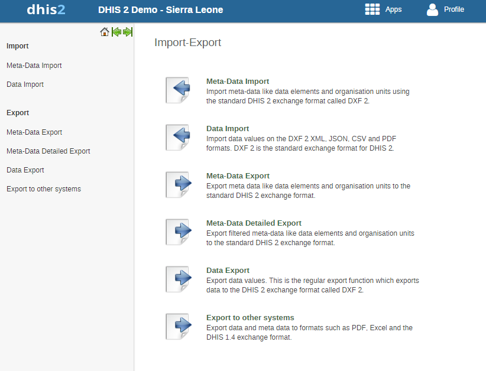

Table of Contents
In a primary health system, the HMIS typically involves a distributed application, where the same application is running in different geographical locations (PHCs,CHCs, hospitals, districts, and state). Most of these physical locations do not have Internet connectivity, and hence they work off-line. At some point (normally at the district level), the data needs to be synchronised in order to have a consolidated database for the a particular geographical region. For this, it is important to be able to export data from one location (which is working offline, say at the health facility level) to another one say at the district level where the data would need to be imported. This feature of exporting and importing is thus a crucial function of a HMIS. This feature also helps us overcome the dependency on Internet to some degree, as data updates can be transferred via USB key where there is no connectivity, or through email where there is limited Internet connectivity. DHIS2 provides robust export-import functionality to fulfill these needs.
To access the main Import-Export module, choose A number of services are available, all of which will be described in detail in respective sections below.
|  |